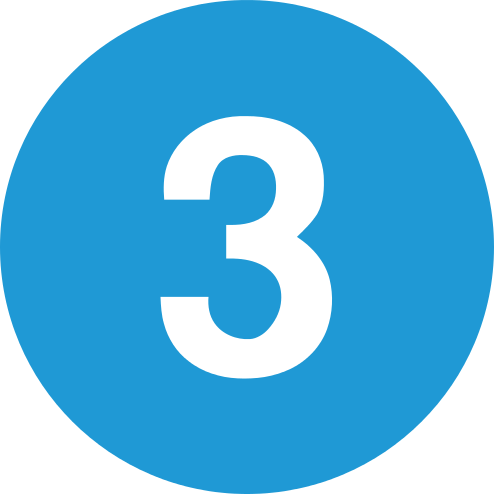
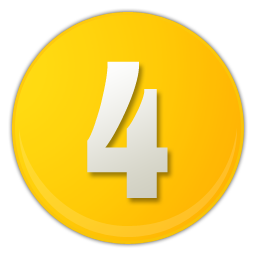

Compétences
Projets
Le code source de mes projets est accessible directement sur mon GitHub
Site pour des associations sportives
Un site web comportant des sections "Articles" pour la diffusion d'informations par catégorie sportive.
Une section "Création de compte", "Authentification" et "Accéder à son espace perso", "Créer un article",
"Modifier un article", "Desactiver un article" ainsi qu'un forum.
Site pour une bibliotheque 2ième partie
Un site web sur la reservation et l'emprunt de livre pour une bibliotheque à améliorer.
Un batch mail qui envoi de façon quotidienne aux personnes n'ayant pas rendues les livres à temps.
La possibilité pour un utilisateur d'annuler sa réservation en cours ou d'en faire une si aucun livre n'est disponible.
Test et debug d'une application Java 8
Une application Java 8 avec spring et une configuration XML.
L'application a été testé avec des TU et les bugs/erreurs ont été corrigés.
Le code coverage de 75% et les TODO a implémentés. Tout ceci en utilisant l'Intégration continue avec Jenkins.
Site pour une bibliotheque
Un site web sur la reservation et l'emprunt de livre pour une bibliotheque.
Un batch mail et une API de réservation pour emprunter des livres et étendre l'emprunt (deux fois maximum)
La sécurité de l'application est réalisé avec Spring Sécurity et l'utilisation des sessions.
-

API JAVA REST & Angular (Securisé par JsonWebToken)
-

API JAVA REST & BATCH EMAIL (Securisé par session)
-

Maintenance d'une application (Test unitaire & Intégration)
-

API JAVA REST & BATCH EMAIL (Securisé par session)
Merci pour votre visite!
Le site n'est pas totalement responsive pour mobile, je travaille dessus en ce moment même.
Vous pouvez me contacter sur mon adresse email personnelle : deroussenicolas@gmail.com
github facebook twitter